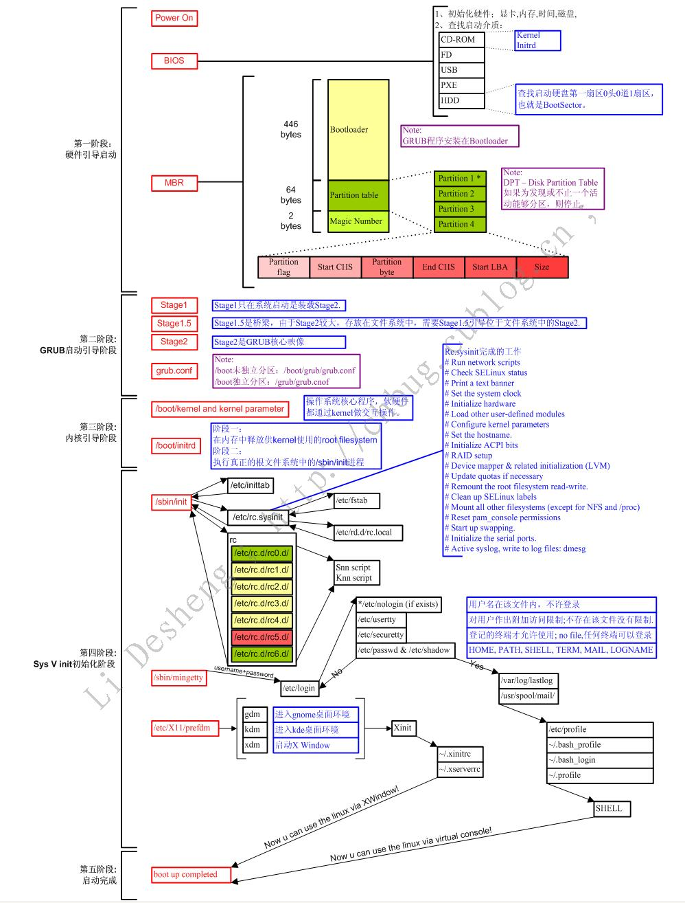

Linux组成
Linux: kernel+rootfs
kernel: 进程管理、内存管理、网络管理、驱动程序、文件系统、安全功能
rootfs:程序和glibc(GNU发布的libc库，即c运行库)
库:函数集合，function,调用接口（头文件负责描述）
过程调用：procedure，无返回值
函数调用：function
程序：二进制执行文件
内核设计流派：
单内核(monolithic kernel)：Linux
把所有功能集成于同一个程序
微内核(micro kernel)：Windows, Solaris
每种功能使用一个单独子系统实现
内核
Linux内核特点：
支持模块化：.ko（内核对象）
如：文件系统，硬件驱动，网络协议等
支持内核模块的动态装载和卸载
组成部分：
核心文件：/boot/vmlinuz-VERSION-release
ramdisk：辅助的伪根系统
CentOS 5: /boot/initrd-VERSION-release.img
CentOS 6,7: /boot/initramfs-VERSION-release.img
模块文件：/lib/modules/VERSION-release
CentOS6启动流程

1.POST加电自检
完成对各硬件的情况的检测，并按照次序查找到的引导设备，第一次有引导程序的设备为本次启动设备
2.bootloader引导加载器
完成引导启动设备的引导选定的内核至内存空间中，并把系统控制权交给内核
BootLoader分类：
LILO：linux loader
GRUB：grand unified bootloader
grub legacy
grub 2
grub首先启动Stage1：mbr，之后加载stage1.5并加载其中启动/boot分区的驱动，之后启动stage2
3. kernel自身初始化：
1. 探测可识别的硬件信息
2. 加载驱动程序
3. 以只读的方式挂载根目录
4. 启动系统的第一个进程init或者systemd
4. Centos5 加载/etc/inittab下的默认的启动级别，
Centos6加载/etc/inittab和/etc/init/*.conf
5. 启动rc.sysinit脚本
1. 设置主机名
2. 设置时钟
3. 加载udev和selinux
4. 挂载/etc/fstab定义的文件系统
5. 以读写的方式重新挂载根分区
6. 挂载swap分区
7. 设置定义在/etc/sysctl.conf中的参数
8. 激活lvm和raid设备
9. 加载额外的驱动
10. 后续的清理工作
6./sbin/init --> (/etc/inittab) -> 设置默认运行级别rc N -> 运行系统初始脚本、完成系统初始化 -> (关闭对应下需要关闭的服务)启动需要启动服务
-> 设置登录终端
1.init程序的类型：
SysV: init, CentOS 5之前
配置文件：/etc/inittab
Upstart: init,CentOS 6
配置文件：/etc/inittab, /etc/init/*.conf
Systemd：systemd, CentOS 7
配置文件：/usr/lib/systemd/system
/etc/systemd/system
2./sbin/init （CentOS6之前），之后 /etc/inittab
运行级别：为系统运行或维护等目的而设定；0-6：7个级别
0：关机
1：单用户模式(root自动登录), single, 维护模式
2: 多用户模式，启动网络功能，但不会启动NFS；维护模式 3：多用户模式，正常模式；文本界面
4：预留级别；可同3级别
5：多用户模式，正常模式；图形界面
6：重启
默认级别：3, 5
切换级别：init #
查看级别：runlevel ; who -r
3.rc N –> 意味着读取/etc/rc.d/rcN.d/ 实际上为软连接
K*: K##*：##运行次序；数字越小，越先运行；数字越小的服务，通常为 依赖到别的服务
S*: S##*：##运行次序；数字越小，越先运行；数字越小的服务，通常为 被依赖到的服务
服务脚本
定义在/etc/init.d下
1 |
|
注意：正常级别下，最后启动一个服务S99local没有链接至/etc/rc.d/init.d一个服务脚本，而是指向了/etc/rc.d/rc.local脚本，因此，不便或不需写为脚本放置于/etc/rc.d/init.d，且又想开机时自动运行的命令，可直接放置于/etc/rc.d/rc.local中chkconfig --list
xinetd管理的服务
service 命令：手动管理服务
service 服务 start|stop|restart
service --status-all
瞬态（Transient）服务被xinetd进程所管理
进入的请求首先被xinetd代理
配置文件：/etc/xinetd.conf、/etc/xinetd.d/<service>
与libwrap.so文件链接
用chkconfig控制的服务：
示例：chkconfig tftp on
ramdisk
内核中的特性之一：使用缓冲和缓存来加速对磁盘上的文件访问，并加载相应的硬件驱动
ramdisk --> ramfs 提高速度
CentOS 5: initrd
工具程序：mkinitrd
CentOS 6，7: initramfs
工具程序：mkinitrd, dracut
(1) mkinitrd命令
mkinitrd /boot/initramfs-$(uname -r).img $(uname -r)
(2) dracut命令
dracut /boot/initramfs-$(uname -r).img $(uname -r)
chkconfig 列出当前系统的服务的运行级别
chkconfig [--level levels] name <on|off|rest>
--level llll：默认值为2345
chkconfig --level 35 dhcpd on
chkconfig --add atd on 加入开机自动启动
chkconfig --del name 删除
ntsysv
ntsysz命令以图形化的形式，设定服务在当前模式下是否启动
光标在服务名字上，space可以添加*为开机启动
tab键退出确定
自制linux系统
1. 准备一个空闲硬盘，分区并创建文件系统 挂载
fdisk /dev/sdb
/dev/sdb1对应/boot
/dev/sdb2对应根 /
mkfs.ext4 /dev/sdb1
mkfs.ext4 /dev/sdb2
mount /dev/sdb1 /mnt/boot 子目录必须为boot
mount /dev/sda2 /mnt/sysroot
2.安装grub
grub-install --root-directory=/mnt /dev/sdb
3.复制现有的内核文件和现有的initramfs至根目录所在的分区
cp /boot/vmlinuz-2.6.32-642.el6.x86_64 /mnt/boot/
cp /boot/initramfs-2.6.32-642.el6.x86_64.img /mnt/boot
4. 创建根目录所需要的目录结构
mkdir -pv /mnt/sysroot/{tmp,root,proc,bin,sbin,root,sys,lib,lib64,usr/{bin,sbin},media,mnt}
5. 创建启动grub.conf文件
6. 复制所需的二进制文件 cpcmd.sh
1 |
|